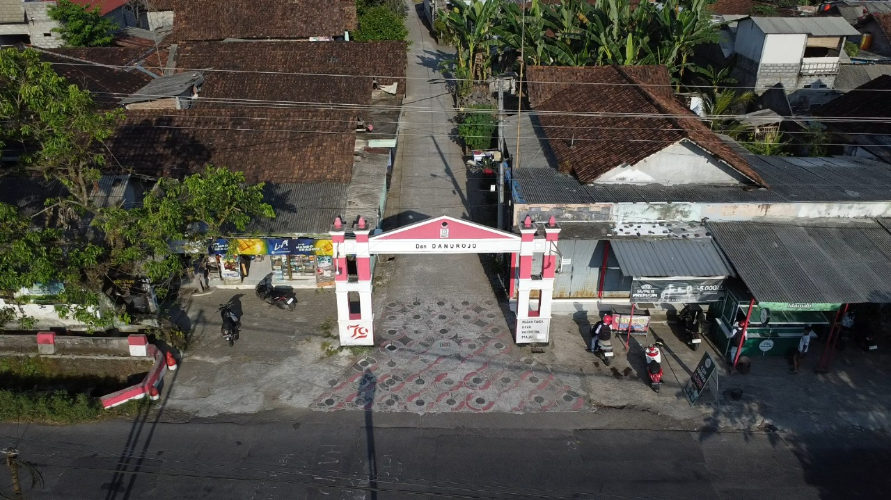

Desa Danurojo

Struktur Kepengurusan Desa
Kepala Wilayah : Bayu Rahmad Ramadhan
Ketua Karang Taruna : Rosi
Rukun Warga (RW)
| RW | Nama Ketua |
|---|---|
| 01 | Bapak Gianto |
Rukun Tetangga (RT)
| RT | Nama Ketua |
|---|---|
| 01 | Bapak Kandar |
| 02 | Bapak Daryono |
| 03 | Bapak Badarudin |
| 04 | Bapak Suprianto |
Produk Desa
![Bakpia Khas Danurojo]()
Bakpia
Bakpia dari Desa Danurojo dibuat dengan resep turun-temurun, menghasilkan perpaduan rasa manis dan gurih dengan tekstur lembut di dalam dan sedikit renyah di luar. Menggunakan bahan-bahan pilihan, bakpia kami cocok sebagai camilan sehari-hari maupun oleh-oleh khas Magelang.
- Tersedia Varian Rasa: kacang hijau, cokelat, keju
- Harga: Rp10.000,00
Emping Mlinjo
Emping mlinjo asli Danurojo terkenal dengan kerangupan dan rasa gurihnya yang khas. Diproses secara tradisional dengan biji mlinjo pilihan, emping ini cocok sebagai camilan atau pelengkap hidangan Anda. Tanpa bahan pengawet.
- Tersedia Varian Rasa: original, pedas manis, pedas gurih
- Harga: Rp10.000,00
Lokasi Desa Danurojo
Dusun Danurojo terletak di Kecamatan Ngluwar, Kabupaten Magelang, Jawa Tengah.